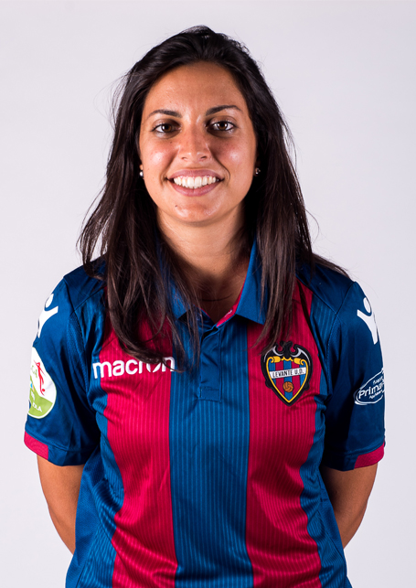
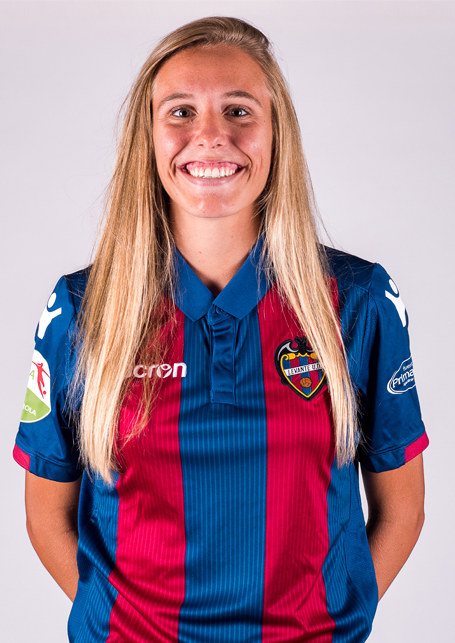

Práctica E2: Equipo de Fútbol


Datos generales del Equipo
Presidente 2019: Francisco CatalánEntrenador 2019: Joaquín GarcíaEntrenador temporada 2008/09: Gustavo Duco
Instalaciones
Ciudad: ValenciaEstadio: Ciutat de ValènciaFundación equipo: 1993Inauguración de estadio: 1969
Datos del Club
Temporadas en la Superliga Española: 13Puntos: 743Partidos jugados: 346Ganados: 231Empatados: 50Perdidos: 65
Palmarés
Superliga (4): 1996/97, 2000/01, 2001/02, 2007/08Copa de la Reina (6): 1999/00, 2000/01, 2001/02, 2003/04, 2004/05, 2006/07Supercopa de España (2): 1997, 2000
Levante Unión Deportiva Femenino
El Levante Unión Deportiva es un club de fútbol de España con sede en la ciudad de Valencia y actualmente milita en la Liga Santander. En 1909 se fundan el Levante Fútbol Club y el Gimnástico Fútbol Club, coincidiendo con la fundación de la Federación Valenciana de Fútbol. Ambos se fusionaron en 1939 con el nombre de Unión Deportiva Levante-Gimnástico, pasando a denominarse Levante Unión Deportiva en 1941. El equipo toma el nombre de la playa de Levante, donde estaba ubicado su campo de juego, el camp de la platgeta ("campo de la playita"), a principios del siglo XX.2 Debido a sus orígenes en el barrio marítimo siempre ha sido considerado el equipo del Cabañal.
La sección de fútbol femenino del Levante Unión Deportiva se creó en 1998 al absorber al club San Vicente Valencia, fundado en 1993. Actualmente compite en la Primera División Femenina de España.
Para más información, visite la web oficial: Levante UD
| Posición | Nombre | Nacionalidad | |
|---|---|---|---|
| POR | Sandra Torres | Española |  |
| DEF | Greta Espinoza | Mexicana |  |
| DEF | Patri Padilla | Española |  |
| DEF/Capitana | Sonia Prim | Española |  |
| MED | Laura Guti | Española |  |
| DEF | Andrea Palacios | Española |  |
| MED | Ana Buceta | Española |  |
| DEL | Lucía Gómez | Española |  |
| MED | Maitane López | Española |  |
| DEL | Charlyn Corral | Mexicana |  |
| MED | Alba Aznar | Española |  |